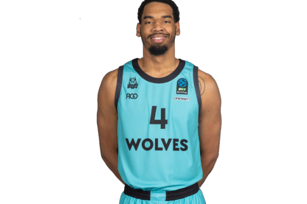
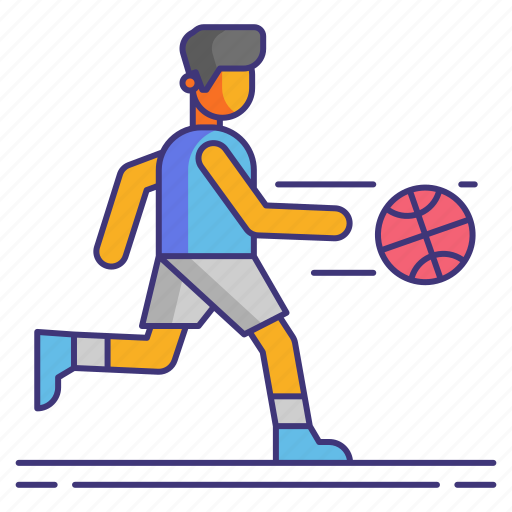
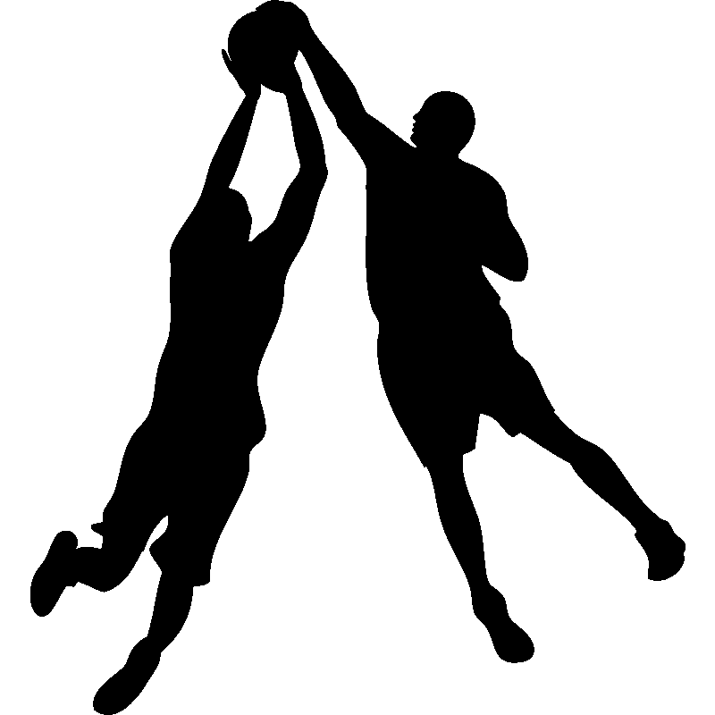
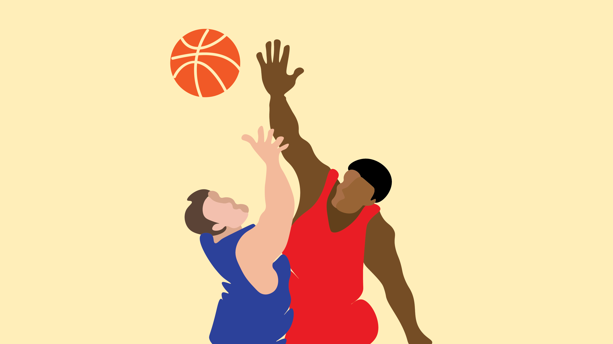

George Marinescu
#4 Aripă
George Marinescu, talentatul jucător al echipei de baschet Ciorile Giulești, se remarcă prin abilitățile sale remarcabile pe teren. Născut cu pasiune pentru baschet în sânge, el a devenit o prezență esențială în echipă, contribuind la succesele acesteia. Admirat pentru viziunea sa de joc și precizia în aruncările la coș, Marinescu este o forță vitală pentru echipă.
Puncte/meci
15.2

Pase decisive/meci
7.6

Capace/meci
1.2

Recuperări/meci
7.3